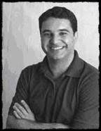
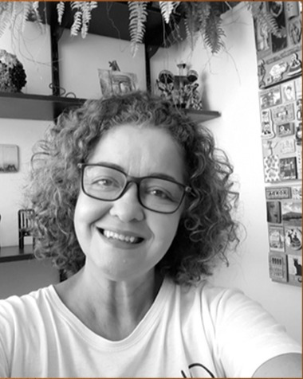
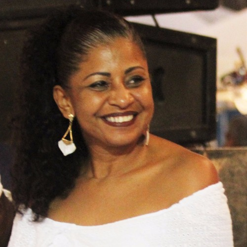
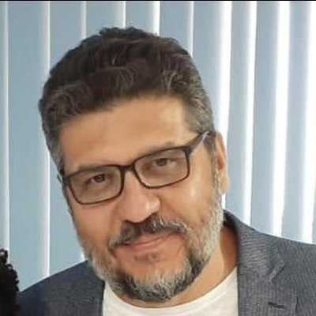
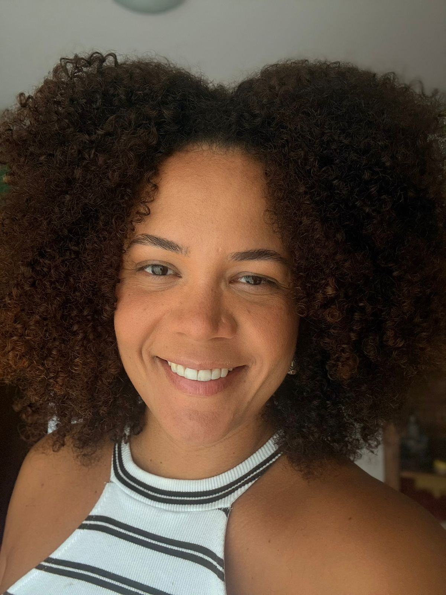
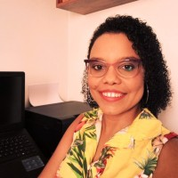
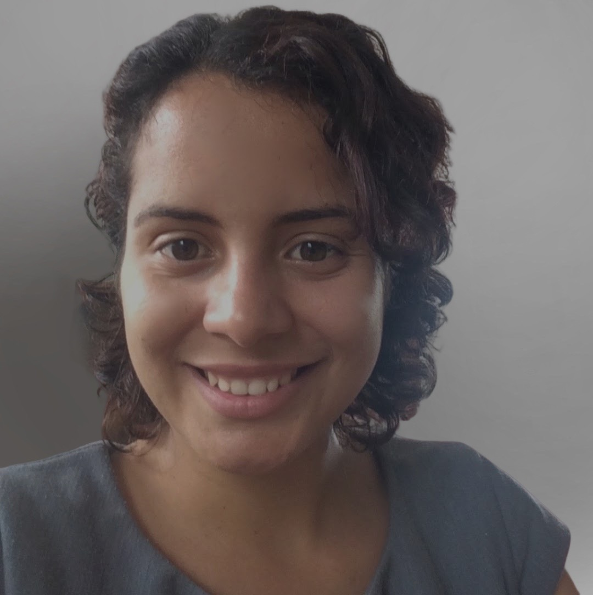
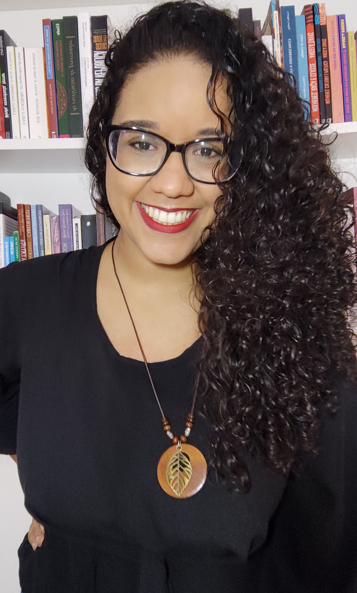
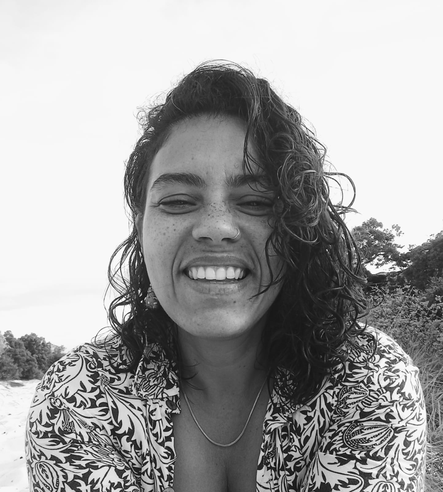
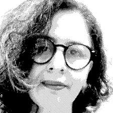

Anderson Ribeiro Oliva
Área: História da África.
Hoje: Universidade de Brasília (UnB).
Memória docente
Professoras e professores que integraram o Curso de História da UFRB ao longo de sua trajetória.
Trajetórias docentes
Ao longo dos vinte anos do Curso de História da UFRB, docentes efetivos e substitutos participaram de diferentes momentos de sua formação. Esta página reúne, por enquanto, os nomes e informações já disponíveis sobre essas trajetórias.
Os registros serão ampliados à medida que novos dados, períodos de atuação, fotografias e depoimentos forem reunidos. Quando uma informação ainda não está confirmada, ela não é apresentada.
Docentes efetivos
Docentes que fizeram parte do curso como professores efetivos e que hoje seguem outras trajetórias institucionais ou estão aposentados.
Área: História da África.
Hoje: Universidade de Brasília (UnB).

Área: História do Brasil República.
Hoje: Universidade Federal da Bahia (UFBA).

Área: História do Brasil República.
Hoje: Universidade Federal do Sul da Bahia (UFSB).

Área: História Antiga.
Hoje: Universidade Federal de Ouro Preto (UFOP).

Área: História Contemporânea.
Hoje: Universidade Federal da Bahia (UFBA).

Área: História Ibérica.
Hoje: Universidade Federal do Sul da Bahia (UFSB).

Hoje: Universidade Federal Fluminense (UFF).

Área: Ensino de História e Estágio Supervisionado em História.
Hoje: aposentada.

Hoje: Universidade Federal da Bahia (UFBA).

Hoje: Universidade Federal Fluminense (UFF).

Hoje: Centro de Cultura, Linguagens e Tecnologias Aplicadas (CECULT/UFRB).

Área: História Contemporânea.
Hoje: Universidade Federal da Bahia (UFBA).
Docentes substitutos
Docentes que integraram temporariamente o Curso de História e contribuíram para sua formação em diferentes áreas e componentes.


Área: História da África.
Hoje: Educação Básica, Escola de Tempo Integral de Amargosa.
Hoje: Instituto Federal da Bahia (IFBA).

Área: Metodologia do Ensino de História.
Hoje: Universidade Federal do Oeste da Bahia (UFOB).

Área: História Moderna e História Contemporânea.

Área: Didática, Organização da Educação Brasileira e História da Educação no Brasil.
Área: História Contemporânea.
Hoje: professor da Educação Básica.
Área: História Contemporânea.
Hoje: Universidade do Estado da Bahia (UNEB), Campus II.
Hoje: docente efetiva do Curso de História da UNEB, Campus IV, Jacobina.